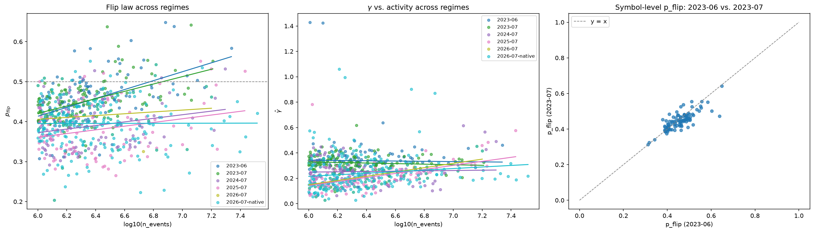

Empirical market microstructure · June 2023
Order flow
remembers.Impact does not.
I re-measured three classical microstructure results on Binance's public tick dumps and carried them to a cross-section wide enough to see which depend on how much a symbol trades.
- Raw aggTrades prints
- 105,147,096
- L1 quote updates
- 114,231,299
- Universe requested
- 207 symbols
- Cross-section analyzed
- 121 symbols
- Kernels deconvolved
- 16 symbols
- Endogeneity panel
- 41 symbols
- Regimes re-measured
- 2023-06 → 2026-07
- Estimator tests vs. synthetic truth
- 268
The three headline findings
Finding 01 · Phase 2Explore →
Memory is liquidity-invariant. Flipping is not.
The long-memory exponent γ barely moves across 1.33 decades of activity: the fitted trend explains 0.03% of the cross-sectional variance. The probability that the next trade flips sign rises steadily with activity, and the two tails separate cleanly.
Finding 02 · Phase 2Explore →
Reading impact off the response function understates the kernel exponent.
The measured response mixes the bare kernel with flow memory. On synthetic data with a planted exponent of 0.35, deconvolution recovers 0.377–0.397 and a naive fit to the response returns 0.063–0.125. On real symbols, 12 of 16 land inside the critical-balance band.
Finding 03 · Phase 3Explore →
Two branching-ratio estimators disagree on every symbol.
The exponential-kernel MLE puts the median branching ratio at 0.707. The model-free count-variance estimator reads higher on 41 of 41 symbols, median 0.959. I report both and do not average them.
Q4 · 121 symbols · 2023-06
What varies with liquidity across 121 symbols
Every symbol in the 207-symbol universe clearing one million aggressor events gets the same five statistics. Plotted against activity, γ sits flat across the whole range while p_flip climbs. That suggests order flow's memory and its short-run alternation have separate drivers.
Each symbol's γ standard error understates its true uncertainty, unevenly across the cross-section. The fitted lines are descriptive summaries and carry no confidence intervals.
Loading cross-section…
Q5 · 16 symbols · one week
The bare impact kernel, separated from flow memory
The response function R(ℓ) is impact plus every correlated trade that followed: R(ℓ) ≈ G(ℓ) + Σ G(ℓ−n)·C(n). Because order flow has long memory, the accumulation term dominates and R climbs where G decays. Recovering G means solving the Toeplitz system back out.
Bouchaud's diffusivity argument predicts β = (1−γ)/2. The band below is ±2×max(block sd, 0.04). The 0.04 floor is the deconvolution's own measured finite-length bias, so smaller departures are not called violations.
Loading kernels…
Critical-balance departure · Δ = β − (1−γ)/2
Q6 · 41 symbols · Hawkes
How much of order flow is a reaction to order flow
The branching ratio is the fraction of events that are reactions and not arrivals from outside. I rescale to business time before fitting. In a synthetic test, a regime-switching Poisson process with no self-excitation at all produces spurious near-criticality on clock time.
Error bars are the interquartile range across six independently fitted sub-windows, not standard errors. An exponential kernel fitted to a true power law understates α, so these are lower bounds.
Loading panel…
Loading comparison…
The two estimators disagree
Q7 · 6 symbols · replay
Execution costs under the measured kernels
Three schedules run against replayed order flow under one cost model, with each symbol's own measured kernel supplying its impact term. The flow-reactive schedule's parameters are chosen on days 1–3 and frozen. Every number below comes from the disjoint days 4–7.
This is a cost-model comparison and not a backtest or a trading recommendation. It models no queueing, depth, latency, or reaction by other participants.
Loading schedules…
Read the error bars before the ranking
Q8 · regimes · 2023-06 → 2026-07
Does it hold over time?
Everything above is June 2023. I re-ran the cross-section and the endogeneity panel unchanged on later months (the one after, then each July through 2026) against the same fixed 207-symbol universe, and once more on the 2026 market's own symbol list. This tests whether the shape of the cross-section belongs to markets in general or to that month.
Symbols listed after June 2023 are excluded from the fixed-universe regimes, so those describe what happened to the 2023 panel. The native-universe run shows the 2026 market with no 2023 filter, which separates a law that changed from a panel that thinned out.
Loading regimes…

The flip law fades, the γ break is confined to the 2023-listed contracts, and the raw endogeneity drop overstates the drift
Checks on the estimators
What the checks changed
A wrong microstructure number does not crash anything. It lands in the published range and looks like a replication. I ran each estimator on series with known answers before using it on real data, and the checks below changed what I report.
-
Ground truth
Estimators validated against series with analytic answers
i.i.d. signs (ACF exactly 0), a Markov chain (ACF = (2p−1)k), FARIMA noise (γ = 1 − 2d), a planted impact kernel the response estimator must recover, and a simulated Hawkes process with a known branching ratio. 268 tests run offline before any real tick touches the pipeline.
-
Null process
A process with no self-excitation that fakes near-criticality
A regime-switching Poisson process, a rate that alternates on a fixed clock, makes both branching estimators report spurious endogeneity (n̂ = 0.934, α̂ = 0.976) on clock time. That fixture is why business-time rescaling is applied unconditionally.
-
R versus G
A rising response is the expected shape
The literature's decaying object is the kernel G, and the measured response R is a different object, so a rising R does not contradict Bouchaud (2004). An independent check agrees: Q1's γ on two months of trades predicts a plateau ratio of about 4.4× (band 3.5–6.9×), and Q2 measured 5.39× on 14 days of quotes.
-
Thinning bias
Why a wider tolerance was the wrong repair
Thinning a constant-baseline simulation to mimic seasonality gave α̂ ≈ 0.285 against a true 0.35. A control that thinned uniformly at random also dropped α to ≈0.25, so thinning deletes self-excited children regardless of seasonality. A loosened tolerance would be a permanent tax on the test's power. I built a seasonal-baseline simulator instead, and the tight ±0.06 tolerance passes with errors of −0.009 and −0.008.
-
Seed ranges
Synthetic deconvolution contrast, quoted across seeds
The test runs three seeds. Deconvolution recovers 0.377–0.397 and the naive fit returns 0.063–0.125. The point figures (0.3766 vs. 0.0633) are seed 20 alone.
-
Two estimators
"Near-critical" depends on which estimator you ask
Under the MLE, zero of 41 symbols exceed α = 0.9. Under the count-variance estimator computed in the same run, all 41 of 41 do. The panel establishes high endogeneity and leaves how close to critical unresolved, pending a power-law refit.
-
Scope
Replication against published benchmarks
Prior art exists for each question here, so I chose questions where a published number is available to check against.